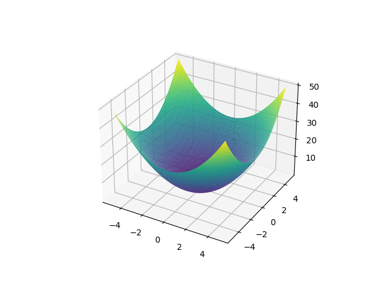
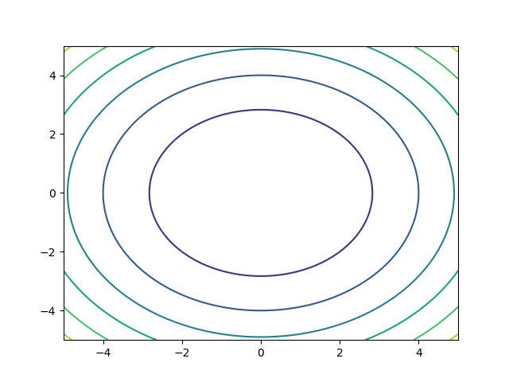

Cálculo Multivariable
Apuntes
Índice
- 1. Funciones discontinuas más comunes
- 2. Representación del plano
- 3. Ecuación vectorial del plano
- 4. Ecuación escalar
- 5. Plano Entre Tres Puntos
- 6. Ángulo Entre Planos
- 7. Plano que pasa por un punto y es perpendicular a otro plano
- 8. Vector de una recta o función
- 9. Parametrizacion de una recta con dos puntos
- 10. Ecuación paramétrica de la recta a una ecuación simétrica
- 11. Coordenadas rectangulares, cilíndricas y esféricas
- 12. Coordenadas rectangulares a esfericas
- 13. Dominio de una función
- 14. Imagen de una función (Rango)
- 15. Curvas de nivel
- 16. Derivadas parciales
- 17. Derivadas parciales multiples
- 18. Derivada de orden superior
- 19. Error maximo
- 20. Regla de la cadena
- 21. Gradiente
- 22. Derivada direccional (sí la funcion es derivable en el punto)
- 23. Razón de cambio en un punto
- 24. Derivada direccional para todas las funciones
- 25. Puntos criticos de una funcion
- 26. Clasificar Puntos Criticos (maximos, minimos y sillas)
1 Funciones discontinuas más comunes
Funciones Discontinuas Más Comunes:
- Un numero dividido entre 0 es indefinido, por lo tanto una función dividida entre 0 también es indefinida y por lo tanto discontinua.
- A los números negativos no le podemos sacar raíz cuadrada en el dominio de los números reales.
- Tangente, en los puntos \( \frac{(2k + 1)\pi}{2} \).
- Secante, en los puntos \( \frac{(2k + 1)\pi}{2} \).
- Cosecante, en los puntos \(\pi k\).
- logaritmo de 10 en \( x \leq 0 \)
2 Representación del plano
un plano es un objeto ideal que solo posee dos dimensiones, y contiene infinitos puntos y rectas; es un concepto fundamental de la geometría junto con el punto y la recta. Su ecuación es la siguiente:
\[ ax + by + cz + d = 0 \]
otras formas de representar el plano también podrían ser las siguiente:
3 Ecuación vectorial del plano
\[ \boldsymbol{a} \cdot \boldsymbol{r} = \boldsymbol{n} \cdot \boldsymbol{r}_0 \]
4 Ecuación escalar
\[ a (x-x_0) + b (y - y_0) + c (z - z_0) = 0 \]
5 Plano Entre Tres Puntos
6 Ángulo Entre Planos
para calcular el angulo entre dos planos usamos la siguiente ecuación:
\[ \cos \theta = \frac{\vec{u} \cdot \vec{v}}{\left|\vec{u}\right|\left|\vec{v}\right|} \]
donde n es un punto en \( \mathbb{R}^3 \), primero determinamos el valor absoluto de la normal de \(n_1\) y de \(n_2\) y los multiplicamos, ese sera nuestro divisor; Para el denominador calculamos el producto cruz entre \(n_1\) y \(n_2\) y obtenemos su valor de la normal; Y por ultimo calculamos el arco coseno (\(cos^{-1}(\theta)\)) de nuestra división, ojo que el resultado esta en radianes.
7 Plano que pasa por un punto y es perpendicular a otro plano
Para encontrar un plano perpendicular podemos aplicar una de las operaciones de vectores el producto cruz, pero primero tendremos que encontrar el vector de la función. Y ya con el vector solo tenemos que encontrar el vector perpendicular (producto cruz) y pasamos los valores a la ecuación escalar del plano:
Punto por el que queremos que pasase la función: \[ A = (2,3,4) \]
Función y su forma de vector: \[ 3x+2y+z-6=0 \rightarrow B = (3,2,1) \]
producto cruz (C): \[ Det \begin{vmatrix} x & y & z\\ 3 & 2 & 1\\ 2 & 3 & 4 \end{vmatrix} = (5, -10, 5) \]
por ultimo sustituimos en la ecuación del plano: \[ 5(x-2)-10(y-3)+5(z-4) = 0 \]
\[ 5x-10y+5z = 20+10-30 \]
\[ \boxed{5x-10y+5z = 0} \]
8 Vector de una recta o función
Para obtener el vector de una función simplemente extraemos los valores escalares que están multiplicando a nuestros valores coordenados:
función: \[ \frac{1}{2} x + 7y - 4z - 6 = 0 \]
su vector: \[ (\frac{1}{2}, 7, -4) \]
9 Parametrizacion de una recta con dos puntos
Sustituimos los valores en la siguiente formula, P1 es el punto de origen, P2 punto final y t es un valor entre 0 y 1
\[ P_1 + t \cdot (P_2 - P_1) \]
10 Ecuación paramétrica de la recta a una ecuación simétrica
La ecuación simétrica de la recta nos permite encontrar la ecuación continua de la recta1 simplemente resolviendo la ecuacion en los términos que necesitemos.
\[ L: \frac{x-x_0}{a_1} = \frac{y-y_0}{a_2} = \frac{z-z_0}{a_3} \]
Para calculara simplemente tenemos que sustituir nuestro punto de paso \(P_0\) y nuestro vector de dirección \(\vec{a}\) en los valores en la formula:
Identificamos nuestro punto de paso y nuestro vector de dirección:
\[ \Bigg\{ \begin{aligned} x &= -4 + 2t\\ y &= -2 \\ z &= -2 +5t \end{aligned} \]
punto de paso \( P_0 = (-4,-2,-2) \). vector de dirección \( \vec{a} = (2,0,5) \).
ahora sustituimos:
\[ L: \frac{x-4}{2} = \frac{y-2}{0} = \frac{z-2}{5} \]
Cuando nos quede 0 en el denominador de alguna ecuación simplemente sustituimos el valor por su igualación a 0:
\[ L: \frac{x-4}{2} = \frac{z-2}{5} \land y = -2 \]
11 Coordenadas rectangulares, cilíndricas y esféricas
| Rect. | Polares | Esféricas |
|---|---|---|
| \(x\) | \(r \cos(\theta)\) | \(\rho \sin(\varphi)\cos(\theta)\) |
| \(y\) | \(r \sin(\theta)\) | \(\rho \sin(\varphi)\sin(\theta)\) |
| \(z\) | \(z\) | \(\rho \cos(\varphi) \) |
| \(x^2+y^2\) | \(r^2\) | |
| \(x^2+y^2+z^2\) | \(\rho^2\) | |
| \(y/x\) | \(\tan(\theta)\) | \(\tan(\theta)\) |
| \(r\) | \(\rho \sin(\varphi)\) | |
| \(\theta\) | \(\theta\) |
12 Coordenadas rectangulares a esfericas
Las coordenadas esféricas requieren dos ángulos, por lo que se parecen mucho a las coordenadas polares. θ funciona exactamente como en coordenadas polares, sí \(x=0\) y \(y > 0\) el ángulo es 90°; sí \(x=0\) y \(y < 0\) el ángulo es 270°.
\[ \begin{aligned} r &= \sqrt{x^2+y^2+z^2} & \varphi &= cos^{-1}\left( \frac{z}{r} \right) \\ \end{aligned} \]
\[\theta = tan^{-1}\left( \frac{y}{x} \right)\]
13 Dominio de una función
Los valores para los cuales la función está definida. Variable independiente
El dominio son los valores de X que puede tomar una función:
\[ f \begin{pmatrix} x \\ y \end{pmatrix} \ = \frac{ \sqrt{x+y+1} }{x - 1} \]
La primera cosa que debemos tomar en cuenta en que puntos la función es discontinua, en este caso la función tiene dos discontinuidades, en el numerador y en el denominador.
En el denominador no puede haber un número cero, entonces solo basta con resolver la ecuación \( x-1 = 0 \) para encontrar la discontinuidad. \( x = 1 \)
Como los números negativos no tienen raíces, no hay números reales que multiplicados sean negativos, se puede inferir que la función no existe en ningún punto que donde \( x+y+1 < 0 \).
Entonces, con la información que ya conocemos podemos decir que la función existe en todos los puntos donde \(x+y+1\) sea mayor a 0 y donde X sea diferente de 0. En notación matemática el dominio se escribiría así:
\[ \begin{Bmatrix} \begin{pmatrix} x \\ y \\ \end{pmatrix} \in \mathbb R^2: x + y + 1 \geq 0 \wedge x \not = 1 \end{Bmatrix} \]
14 Imagen de una función (Rango)
Conjunto de valores que puede tomar la función. Variable dependiente.
El rango o imagen de una función es todo valor de Y que puede tomar nuestra función \( f: \mathbb R^n \to \mathbb R^m \):
- Sí la función a la cual queremos calcular su rango solo tiene un parámetro, significa que nos encontramos con una función vectorial \(n = 1\).
- Por otro lado sí la función acepta dos parámetros y retorna un tercero entonces estamos ante una superficie. \( n = 2 \) y \(m = 3\).
\[ f \begin{pmatrix} x \\ y \end{pmatrix} = \sqrt{9-x^2-y^2} \]
Para encontrar el rango es muy recomendable encontrar primero el dominio de la función, así podemos saber donde debemos empezar a evaluar, para nuestro ejemplo el dominio de la función es \( { (^x_y) \in \mathbb R^2: x^2 + y^2 \leq 9 } \).
La primera cosa que podemos notar en la función es que es una raíz, eso significa que no puede ser un valor negativo, por lo tanto el valor mas pequeño al que podemos calcular la raíz en el dominio de los reales es el número 0, este sería el valor mínimo de la imagen.
También podemos notar que los valores están elevados al cuadrado (los valores de X2 y y2 siempre son positivos) entonces sus valores siempre se le restan a 9 y entonces como siempre se van a restar los valores, podemos inferir que el valor más alto que puede retornar esta función es \(\sqrt{9} \), este sería el valor máximo de la imagen.
El resultado que obtenemos es que el dominio de la función se extiende continuamente desde \( [0, 3] \).
15 Curvas de nivel
Las curavs de nivel son proyecciones bidimencionales de funciones en tres dimenciones, estas nos permiten ver los valores de la proyeccion rapidamente sin nececidad de un graficador.


16 Derivadas parciales
La derivada parcial se denota como \( \frac{\partial}{\partial x} \) o tambien como un subindice en el nombre de la funcion \( f_x = \frac{\partial}{\partial x} \). Para calcular la derivada parcial de una funcion debemos calcular la derivada de la variable indicada mientras el otro valor lo tomamos como una constante. Si la es la derivada parcial de x, tendriamos algo así:
\[ \begin{aligned} f &= x^2 + x^2y^3 + y^2 \\ f_x &= \boxed{2x + 2xy^3} \end{aligned} \]
17 Derivadas parciales multiples
Es comun que un procedimiento requiera mas de una derivada parcial, usualmente se denota como \(f_{xy}\) donde cada subindice es una derivada parcial:
\[ \begin{aligned} f &= x^2 + x^2y^3 + y^2 \\ f_x &= 2x + 2xy^3 \\ f_{xy} &= \boxed{6xy^2} \end{aligned} \]
cabe resaltar que el orden si afecta como derivamos, si nuestra funcion nos pide la derivada \( f_yx \) primero derivamos \(y\) y luego \(x\)2.
18 Derivada de orden superior
Cuando tenemos multiples variables hay varias posibles derivadas, cada una correspondiente a cada variable que podemos tomar:
\[ \begin{aligned} f &= x^2 + x^2y^3 + y^2 \\ f_x &= 2x + 2xy^3 \end{aligned} \]
\[ \begin{aligned} f_{xx} = 2 + 2y^3 & ~ ~ & f_{xy} = 6xy^2 \end{aligned} \]
19 Error maximo
para encontrar el error en una funcion primero derivamos la funcion y multiplicamos por la razon de cambio de cada variable. Ejemplo:
El radio de la base y la altura de un cono circular recto miden 12 cm y 34 cm, respectivamente, pero hay un error posible en la medición de 0.2 cm como máximo en cada uno. Mediante diferenciales estime el error máximo en el volumen calculado del cono \(V=\frac{\pi r^2 h}{3}\).
\[ \begin{aligned} dV &= \frac{\partial V}{\partial r}\,dr + \frac{\partial v}{\partial h}\,dh & \\ & 2\frac{\pi r h}{3} \left( 0.2 \right) + \frac{\pi r^2}{3} \left( 0.2 \right) & \\ & \frac{816 \pi}{3}(0.2)+\frac{144\pi}{3}(0.2) & = 64\pi \end{aligned} \]
20 Regla de la cadena
Para aplicar la regla de la cadena en una funcion multivariable simplemente consiste en sustituir cada variable y luego derivar cada uno de los elementos, Ejemplo: Derivada de \(w = x^2 + y^2 + z^2 \) donde \(x = st\) ; \(y = s\cos t\) ; \(z = s\sin t\).
\[ \begin{aligned} \frac{\partial w}{\partial s} &= \frac{\partial w}{\partial x} \cdot \frac{\partial x}{\partial s} + \frac{\partial w}{\partial y} \cdot \frac{\partial y}{\partial s} + \frac{\partial w}{\partial z} \cdot \frac{\partial z}{\partial s} \\ &= 2x \cdot t + 2y \cdot \cos t + 2z \cdot \sin t \\ &= 2(st) \cdot t + 2(s \cos t) \cdot \cos t + 2(s \sin t) \cdot \sin t \\ &= 2st^2 + 2s\cos^2 t +2s\sin^2 t \\ &= \boxed{s \cdot (2t^2 + 2\cos^2 t + 2\sin^2 t)} \\ \end{aligned} \]
21 Gradiente
El gradiente es un vector, donde cada elemento representa una derivada parcial de una funcion \(f\), se denota con la \( \triangledown f \).
\[ f(x,y) = x^2y^3 - 4y \]
\[ \begin{aligned} \triangledown f(x,y) = \boxed{ \begin{bmatrix} 2xy^3 \\ -4 + 3x^2y^2 \end{bmatrix} } \end{aligned} \]
22 Derivada direccional (sí la funcion es derivable en el punto)
La forma mas rapida de calcular la variable direcciona es dereterminando si nuestra funcion es derivable el punto, en caso de que sea así podemos aprovechar las propiedades del gradiente. El vector gradiente marcará la dirección de máxima variación de la función en cualquier punto:
\[D_{\vec{u}} f(\vec{x_0}) = \triangledown f(\vec{x_0}) \cdot \vec{u}\]
\[ \begin{aligned} f(x,y) &= x^2y^3 - 4y \\ \vec{u} &= (2,5) \\ \hat{u} &= \left( \frac{2}{\sqrt{29}} , \frac{5}{\sqrt{29}} \right) \end{aligned} \]
\[ \begin{aligned} D_{\vec{u}} f(\vec{x_0}) &= \begin{bmatrix} 2xy^3 \\ -4 + 3x^2y^2 \end{bmatrix} \begin{bmatrix} \frac{2}{\sqrt{29}} \\ \frac{5}{\sqrt{29}} \end{bmatrix} \\ & = \boxed{-\frac{20}{\sqrt{29}} + \frac{4xy^3}{\sqrt{29}} + \frac{15x^2y^2}{\sqrt{29}}} \end{aligned} \]
23 Razón de cambio en un punto
Para encontrar la razon de cambio simplemente sustituimos x y y con los valores en el punto que queremos verificar:
\[ \begin{aligned} D_{\vec{u}} f(\vec{x_0}) &= -\frac{20}{\sqrt{29}} + \frac{4xy^3}{\sqrt{29}} + \frac{15x^2y^2}{\sqrt{29}} \\ &= -\frac{20}{\sqrt{29}} + \frac{4xy^3}{\sqrt{29}} + \frac{15x^2y^2}{\sqrt{29}} \end{aligned} \]
24 Derivada direccional para todas las funciones
El vector gradiente marcará la dirección de máxima variación de la función en cualquier punto: \[D_{\vec{u}} f(\vec{x_0}) = \frac{d}{dt} f(x_0 + t\vec{u}) |_{t=0} \]
\[ \begin{aligned} f(x,y) &= 4-x^2-\frac{1}{4}y^2 \\ \vec{x_0} &= (1,2) \\ \vec{u} &= \left( ~\frac{1}{2}~ , ~\frac{\sqrt{3}}{2}~\right) \\ \end{aligned} \]
\[ \begin{aligned} \frac{d}{dt} f\left[ \begin{pmatrix} 1 \\ 2 \\ \end{pmatrix} + t \begin{pmatrix} \frac{1}{2} \\ \frac{\sqrt{3}}{2} \\ \end{pmatrix} \right] \Bigg\rvert _{t=0} \\ \frac{d}{dt} f\left[ \begin{pmatrix} 1 + t\frac{1}{2} \\ 2 + t\frac{\sqrt{3}}{2} \end{pmatrix} \right] \Bigg\rvert_{t=0} \end{aligned} \]
\[ \frac{d}{dt} \left[ 4 - \left( 1+t\frac{1}{2} \right)^2 - \frac{1}{4} \left( 2+t\frac{\sqrt{3}}{2} \right)^2 \right] \Bigg\rvert_{t=0} \]
\[ \frac{d}{dt} \left[ -\frac{1}{16}t^2 - \left( 1 + \frac{1}{2} \sqrt{3} \right) t + 4 \right] \Bigg\rvert_{t=0} \]
\[ \left( -\frac{1}{8} t - 1 + \frac{1}{2} \sqrt{3} \right) \Bigg\rvert_{t=0} \]
\[ \begin{aligned} &= -1 - \frac{1}{2} \sqrt{3} \\ &= -1.866 \end{aligned} \]
25 Puntos criticos de una funcion
Para encontrar los puntos criticos de la funcion tendremos que calcular la derivada parcial de cada variable y resolverla como un sistema de ecuaciones:
\[ f = 9-2x+4y-x^2-4y^2 \]
\[ \begin{aligned} f_x = -2-2x & & f_y = 4y-8y \\ \end{aligned} \]
\[ \begin{aligned} \boxed{x = \frac{2}{-2}} & & \boxed{ y = \frac{-4}{-8} }\\ \end{aligned} \]
26 Clasificar Puntos Criticos (maximos, minimos y sillas)
Evaluamos los puntos criticos de la funcion en el discriminante, el valor que obtendremos será la variacion de la funcion, entonces solo aplicamos la logica para encontrar el tipo de punto que tenemos.
\[ D =f_{xx}(a,b) f_{yy}(a,b) - \left[ f_{xy}(a,b) \right]^2 \]
| condiciones | significado |
|---|---|
| \(D > 0;f_{xx}>0\) | Es un minimo |
| \(D > 0;f_{xx}<0\) | Es un maximo |
| \(D < 0\) | Es un punto silla |
| \(D = 0\) | Intentar otro punto |
clasificar los puntos criticos en la función \[f = 9-2x+4y-x^2-4y^2 \]
Sus derivadas parciales
\[ f_{xx} = -2 ~ ; ~ f_{yy} = -8 ~ ; ~ f_{xy} = 0 \]
puntos críticos \[ x=-1 ~ ; ~ y = \frac{1}{2} \]
sustituimos los valores de la formula de el diferencial:
\[ \begin{aligned} D = (-2)(-8) - [0]^2 = 16 \\ \end{aligned} \]
Entonces D es mayor a 0 y fxx es menor a 0, por lo tanto el valor es un maximo.